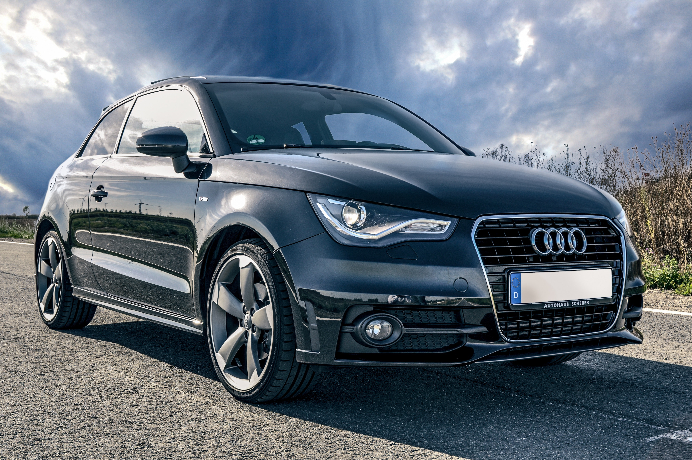
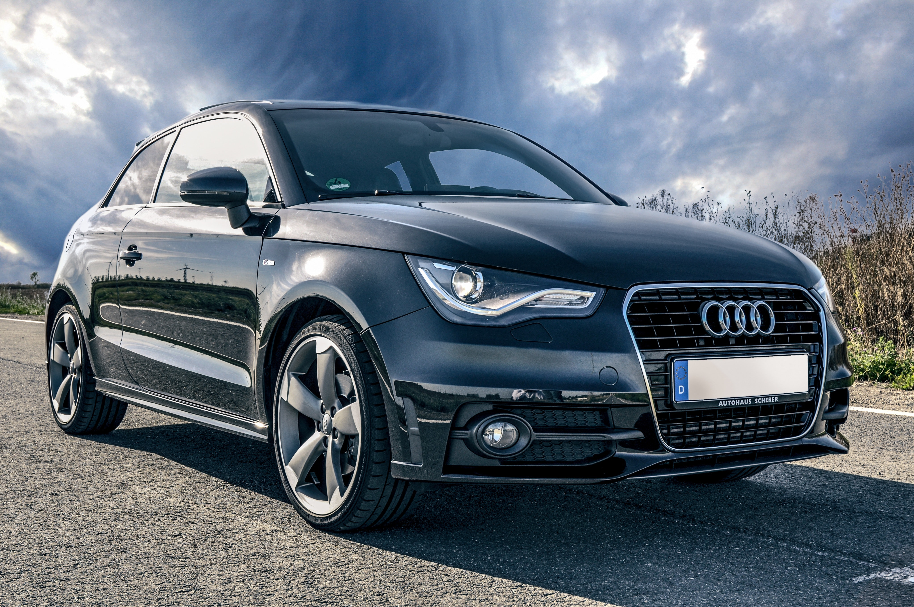

Car painters (refinishers) are responsible for reinstating the pre-accident
paint finish to cars after the structure and/or the panels have been repaired or replaced.
They may also be asked to completely repaint a whole vehicle either to change its colour or reinstate its newness.
Car painters may also become involved in matching colours to an original colour no longer available or to colours that prove difficult to match. A car painter must match the colour, shade and texture of the adjoining panels that are not being painted.
Car painters can work in various work environments from an autobody repair shop to an aircraft hangar, dependent upon what vehicle or transport system they are painting. They work to apply paints inside an enclosed spray booth/oven in order to protect the environment from harmful products.
 
